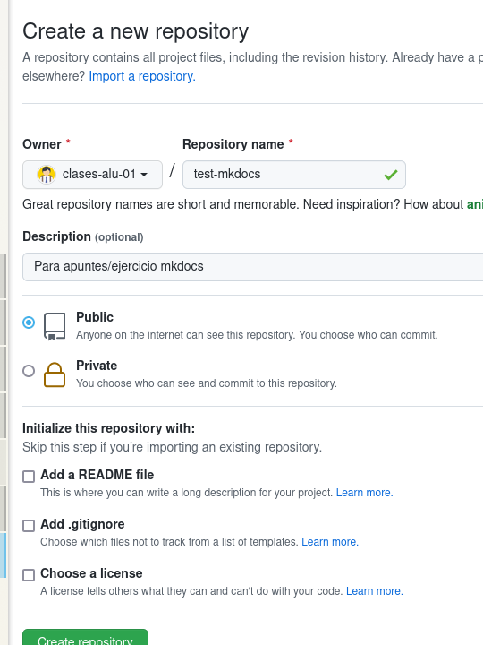
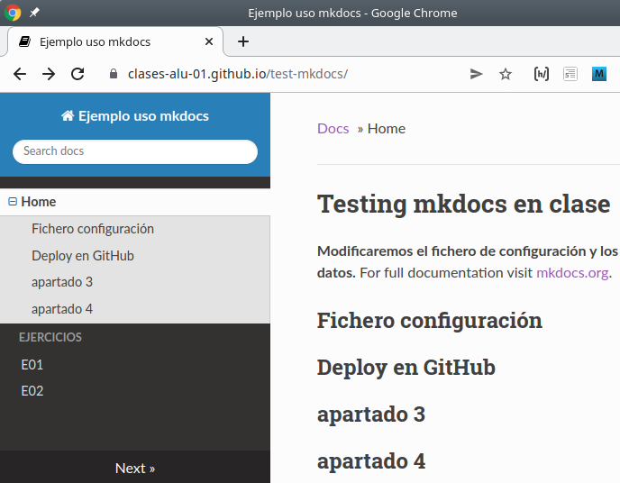

mkdocs¶
MkDocs: Project documentation with Markdown.
MkDocs is a fast, simple and downright gorgeous static site generator that's geared towards building project documentation. Documentation source files are written in Markdown, and configured with a single YAML configuration file. https://www.mkdocs.org.
La idea es simplificar el trabajo de documentar, y poder hacerlo en Markdown. Seguiremos las indicaciones de https://www.mkdocs.org/getting-started/.
Pasos a dar:
- Instalar mkdocs: Ver anexo (requiere python3, pip, y uso de venv).
- Usando como guía Getting Started with MkDocs
- Crear proyecto dentro de directorio clonado con mkdocs new misdocs
- Lanzar mkdocs serve para ver cambios en vivo antes de subirlos a GitHub.
- Añadir al menos dos ficheros en formato Markdown.
- Modificar el fichero de configuración para que indexe los tres ficheros.
- Probar a modificar el tema por defecto
- Una vez terminado hacer mkdocs gh-deploy, esperar unos momentos y ver la página en GitHub Pages. mkdocs activa Pages y crea una rama de nombre gh-pages donde sube el sitio web generado.
1. Instalar mkdocs¶
Usaremos un entorno virtual e instalaremos mkdocs:
clases@vm:~/tmp$ python3 -m venv venv
clases@vm:~/tmp$ source venv/bin/activate
(venv) clases@vm:~/tmp$ pip3 install mkdocs
Collecting mkdocs
Using cached mkdocs-1.2.3-py3-none-any.whl (6.4 MB)
Collecting packaging>=20.5
...
Successfully installed Jinja2-3.0.3 Markdown-3.3.6 MarkupSafe-2.0.1 PyYAML-6.0 click-8.0.3 ghp-import-2.0.2 importlib-metadata-4.10.1 mergedeep-1.3.4 mkdocs-1.2.3 packaging-21.3 pyparsing-3.0.7 python-dateutil-2.8.2 pyyaml-env-tag-0.1 six-1.16.0 watchdog-2.1.6 zipp-3.7.0
(venv) clases@vm:~/tmp$
2. Crear el proyecto¶
Para crear un proyecto de documentación usamos el comando mkdocs new <nombre_proyecto>, que crea un directorio con el nombre del proyecto,y dentro un fichero de configuración mkdocs.yml, un directorio docs y dentro de este un fichero index.md inicial. En docs es donde crearemos y editaremos nuestros ficheros en Markdown.
(venv) clases@vm:~/tmp$ mkdocs new test-mkdocs
INFO - Creating project directory: test-mkdocs
INFO - Writing config file: test-mkdocs/mkdocs.yml
INFO - Writing initial docs: test-mkdocs/docs/index.md
(venv) clases@vm:~/tmp$ cd test-mkdocs/
(venv) clases@vm:~/tmp/test-mkdocs$ ls -a
. .. docs mkdocs.yml
(venv) clases@vm:~/tmp/test-mkdocs$
Por defecto nos crea una estructura inicial con el tema por defecto y un fichero index.md con información sobre mkdocs.
3. Mostrar la documentación¶
Con el comando mkdocs serve se inicia un servidor web de desarrollo (en la URL http://127.0.0.1:8000/) que muestra el resultado de mkdocs en formato web:

El servidor soporta auto-reload, y reconstruye la documentación si hay cambios en el fichero de configuración o en el directorio de documentación.
Por ejemplo, si edita index.md y cambia el título de dicha página mkdocs serve lo detecta (INFO - [17:07:16] Detected file changes) y reconstruye la documentación (INFO - Building documentation...) :

Ahora el proceso quedaría:
- Preparar la documentación en ficheros Markdown, etc.
- Subirla a un hosting, en nuestro caso usaremos GitHub.
4. Documentación¶
Puede tener ficheros en Markdown y mkdocs los convertirá en HTML. Y en cada fichero .md crea un índice con las cabeceras de nivel 1 y 2 que incorpora al HTML.
Además mkdocs genera un barra de navegación que permite navegar secuencialmente, e incorpora la opción de buscar.
Si tenemos varios ficheros que queremos referenciar en la barra de navegación hay que hacerlo en mkdocs.yml usando el apartado nav:
site_name: Ejemplo uso mkdocs
site_url: http://local.com
nav:
- Home: index.md
- Ejercicios:
- E01: ejercicio_01.md
- E02: ejercicio_02.md
- Sobre nosotros: about.md
theme: readthedocs
4.1. Temas¶
Si quiere modificar el tema (por defecto usa uno llamado mkdocs) debe usar el fichero de configuración e indicar otro. En este caso hemos indicado el tema readthedocs incluido en mkdocs. Hay temas adicionales disponibles en este enlace
4.2. Build¶
Una vez haya terminado de trabajar con su documentación podría hacer un build de la misma. Esto genera un directorio site con todo el HTML, estilos, javascript, imágenes, fuentes, etc:
clases@vm:~/tmp/test-mkdocs$ mkdocs build
INFO - Cleaning site directory
INFO - Building documentation to directory: /home/ango/tmp/test-mkdocs/site
INFO - Documentation built in 0.21 seconds
clases@vm:~/tmp/test-mkdocs$ ls -al site/
total 68
drwxrwxr-x 9 ango ango 4096 feb 26 11:31 .
drwxrwxr-x 5 ango ango 4096 feb 10 20:58 ..
-rw-rw-r-- 1 ango ango 3919 feb 26 11:31 404.html
drwxrwxr-x 2 ango ango 4096 feb 26 11:31 css
drwxrwxr-x 2 ango ango 4096 feb 26 11:31 ejercicio_01
drwxrwxr-x 2 ango ango 4096 feb 26 11:31 ejercicio_02
drwxrwxr-x 4 ango ango 4096 feb 26 11:31 fonts
drwxrwxr-x 2 ango ango 4096 feb 26 11:31 img
-rw-rw-r-- 1 ango ango 5463 feb 26 11:31 index.html
-rw-rw-r-- 1 ango ango 558 feb 26 11:31 index.md.old
drwxrwxr-x 2 ango ango 4096 feb 26 11:31 js
drwxrwxr-x 2 ango ango 4096 feb 26 11:31 search
-rw-rw-r-- 1 ango ango 4366 feb 26 11:31 search.html
-rw-rw-r-- 1 ango ango 549 feb 26 11:31 sitemap.xml
-rw-rw-r-- 1 ango ango 215 feb 26 11:31 sitemap.xml.gz
clases@vm:~/tmp/test-mkdocs$
4.3. despliegue¶
Si quisiera desplegarlo en un hosting sólo tendría que subir el directorio site. Pero nuestro objetivo es desplegarlo sobre GitHub Pages, y eso lo hace de una forma muy sencilla mkdocs. Y es lo que vemos en el siguiente apartado.
5. GitHub Deploy¶
Al final de este apartado hay una nota aclaratoria, leer antes de seguir...
Primero creamos un repositorio en GitHub sin inicializar: no marque ninguna de las opciones sobre README, .gitignore y LICENSE:

Y luego en local, en el directorio del proyecto iniciamos el repositorio local, configuramos el remoto y hacemos un primer commit:
(venv) clases@vm:~/tmp/test-mkdocs$ echo "# test-mkdocs" >> README.md
(venv) clases@vm:~/tmp/test-mkdocs$ git init
Inicializado repositorio Git vacío en /home/ango/tmp/test-mkdocs/.git/
(venv) clases@vm:~/tmp/test-mkdocs$ git add README.md
(venv) clases@vm:~/tmp/test-mkdocs$ git commit -m "first commit"
[master (commit-raíz) 44ae340] first commit
1 file changed, 1 insertion(+)
create mode 100644 README.md
(venv) clases@vm:~/tmp/test-mkdocs$ git branch -M main
(venv) clases@vm:~/tmp/test-mkdocs$ git remote add origin https://github.com/clases-alu-01/test-mkdocs.git
(venv) clases@vm:~/tmp/test-mkdocs$ git push -u origin main
Enumerando objetos: 3, listo.
Contando objetos: 100% (3/3), listo.
Escribiendo objetos: 100% (3/3), 237 bytes | 237.00 KiB/s, listo.
Total 3 (delta 0), reusado 0 (delta 0)
To https://github.com/clases-alu-01/test-mkdocs.git
* [new branch] main -> main
Rama 'main' configurada para hacer seguimiento a la rama remota 'main' de 'origin'.
(venv) clases@vm:~/tmp/test-mkdocs$
Nota:
git push -ues equivalente agit push --set-upstreamy configura un remoto por defecto apra esa rama si git push no recibe parámetros.
Tenemos ya el repositorio local enlazado con el remoto. Ahora podemos hacer el deploy de la documentación con el comando mkdocs gh-deploy. Este comando hace el build de la documentación, la mueve a una rama gh-pages y hace un push al remoto:
(venv) clases@vm:~/tmp/test-mkdocs$ mkdocs gh-deploy
INFO - Cleaning site directory
INFO - Building documentation to directory: /home/ango/tmp/test-mkdocs/site
INFO - Documentation built in 0.12 seconds
WARNING - Version check skipped: No version specified in previous deployment.
INFO - Copying '/home/ango/tmp/test-mkdocs/site' to 'gh-pages' branch and
pushing to GitHub.
Enumerando objetos: 60, listo.
Contando objetos: 100% (60/60), listo.
Compresión delta usando hasta 8 hilos
Comprimiendo objetos: 100% (56/56), listo.
Escribiendo objetos: 100% (60/60), 5.18 MiB | 5.77 MiB/s, listo.
Total 60 (delta 4), reusado 0 (delta 0)
remote: Resolving deltas: 100% (4/4), done.
remote:
remote: Create a pull request for 'gh-pages' on GitHub by visiting:
remote: https://github.com/clases-alu-01/test-mkdocs/pull/new/gh-pages
remote:
To https://github.com/clases-alu-01/test-mkdocs.git
* [new branch] gh-pages -> gh-pages
INFO - Your documentation should shortly be available at:
https://clases-alu-01.github.io/test-mkdocs/
(venv) clases@vm:~/tmp/test-mkdocs$
https://clases-alu-01.github.io/test-mkdocs/

Nuevamente el proceso se realiza con Actions, puede comprobarlo en la pestaña Actions del repositorio:

NOTA IMPORTANTE: Se podría haber cambiado el orden de los pasos:
- Crear e iniciar el repositorio en Github.
- Clonarlo en local.
- Dentro del directorio del repositorio ejecutar el comamdo
mkdocs init .(se indica un . en vez de un directorio) de forma que se inicie el proyecto en el directorio del repositorio. - Trabajar en local
- Al terminar hacer un
mkdocs deploy.
6. Anexos¶
6.1. Enlaces¶
- Mkdocs: https://www.mkdocs.org/
6.2. Anexo: instalación de mkdocs¶
Debe tener instalado previamente:
- python3
- python-venv
Si no los tiene instalados:
# apt install python3
# apt install python3-venv
Creamos un entorno virtual en el repositorio:
$ python3 -m venv mivenv
Ese comando crea un directorio de nombre mivenv. Añadimos el entorno virtual al fichero .gitignore:
$ echo "mivenv" >> .gitignore
$ echo ".gitignore" >> .gitignore
Activamos el entorno virtual creado en mienv:
$ source mivenv/bin/activate
(mivenv) $
Observe como ahora el prompt muestra entre paréntesis el nombre del entorno virtual.
Ahora instalamos el modulo mkdocs con la utilidad pip en el entorno virtual:
(mivenv) $ pip install mkdocs
...
(mivenv) $
Y ya podemos usar mkdocs:
(mivenv) $ mkdocs
Al terminar de trabajar con el entorno:
(mivenv) $ deactivate
$
$ mkdocs
bash: mkdocs: orden no encontrada
$
Si desea eliminar el entorno viertual basta con borrar el directorio mienv
$ rm -rf mienv
$
6.3. Instalación de mkdocs en Windows¶
Pasos a dar:
-
Instalar python (y quizás haga falta pip, opcional venv)
-
Descargar https://www.python.org/
- Instalar seleccionando en primera pantalla "Add Python.exe to PATH"
- Probar instalación:
User@WinDev2004Eval MINGW64 ~ $ python --version Python 3.12.2 User@WinDev2004Eval MINGW64 ~ $ pip --version pip 24.0 from C:\Users\User\AppData\Local\Programs\Python\Python312\Lib\site-packages\pip (python 3.12) User@WinDev2004Eval MINGW64 ~ $ -
Instalar
mkdocs:User@WinDev2004Eval MINGW64 ~ $ pip install mkdocs Collecting mkdocs Downloading mkdocs-1.5.3-py3-none-any.whl.metadata (6.2 kB) ... Installing collected packages: ... Successfully installed .... User@WinDev2004Eval MINGW64 ~ $Y probar la instalación
User@WinDev2004Eval MINGW64 ~ $ mkdocs.exe --version mkdocs, version 1.5.3 from C:\Users\User\AppData\Local\Programs\Python\Python312\Lib\site-packages\mkdocs (Python 3.12) User@WinDev2004Eval MINGW64 ~ $